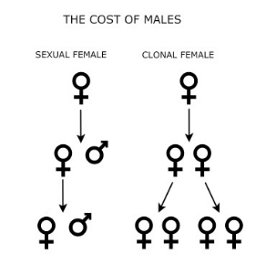
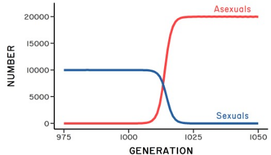
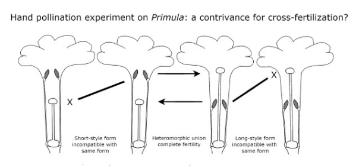

1 Why Sex?
 ZMD
ZMD
1.1 The Question
Most PhD programs require that students pass a preliminary examination. This was certainly true in my case. I was a PhD student at the University of Arizona studying rocky intertidal communities in the Northern Gulf of California. But the exams were not focused on our research. They were "depth-of-knowledge" exams. My question from Prof. Astrid Kodric-Brown instructed me to read the preface of G.C. Williams' book, Sex and Evolution, which contains the following text (Williams 1975):
This book is written from a conviction that the prevalence of sexual reproduction in higher plants and animals is inconsistent with current evolutionary theory.… Many well informed readers may disagree with much of my reasoning, but I hope to at least convince them that here is a crisis at hand in evolutionary biology...
The question was something like this: why does Williams think that sexual reproduction poses a crisis for evolutionary biology, and what is the solution? A crisis? That was news to me. How could there be a crisis on evolutionary biology 40-plus years after the modern synthesis? My graduate course in theoretical population genetics did not mention any crises. I was not convinced. And a little freaked out.
The structure of our exams was very loose. I don't remember having a deadline to produce a written answer, but I do remember that I spent several months on just this one question. During much of this time, I was doing field work in Sonora, Mexico, sometimes under very harsh conditions. But the more I studied the question, the more fascinated I became. I came to think that there was, indeed, a very real anomaly presented by sexual reproduction. Williams was right. Perhaps I was especially interested in this anomaly because I had read Thomas Kuhn's "The Structure of Scientific Revolutions" as an undergraduate (Kuhn 1970). Kuhn made the case that dissecting anomalies can lead to interesting advances, and that made sense to me. While I eventually produced an essay to address the question, the answer felt incomplete. I wanted to know more. There were many hypotheses, but there was no clear general explanation. Many years later, I am still working on my prelim question. This book is my revised answer.
1.2 The problem
There are many problems with sexual reproduction, including the time spent finding mates and the risk of contracting sexually transmitted disease (review in Lehtonen et al. 2012). However, while important, these costs do not form the core of the paradox. Historically, the paradox of sex stems from two things: (1) the cost of meiosis, and (2) the cost of producing males.
1.2.2 The cost of males
The other way to look at the problem was proposed by John Maynard Smith (Maynard Smith 1971, 1978). Here the issue is not relatedness. The problem stems rather from the difference between sexuals and asexuals in their per-capita birth rates (Figure fig-1.1). Imagine a population of sexual individuals at carrying capacity (Ksex). At Ksex the sexual females are, by definition, simply replacing themselves. This means that each sexual female is, on average, producing one son and one daughter. Both sons and daughters contribute genetically to the next generation, but only females give birth. Now, consider a mutation in a single female that causes her to reproduce asexually. She gives birth to two daughters instead of one daughter and one son. These two asexually produced daughters both give birth to two more daughters. Hence, after just two generations, the asexual female has four granddaughters, while the average sexual female has just one granddaughter (Figure fig-1.1). This asymmetry should lead to the rapid replacement sexual females by asexual females (Figure fig-1.2). And by "rapid," I mean within tens of generations, even for very large populations (Lively 1996). We thus seek a selective force that can give an advantage to sexual reproduction on a very short time scale.

Several assumptions went into Maynard Smith's model for the cost of males. In particular, he assumed that sexual females and asexual females make the same number of offspring, and that the survivorship of these offspring is also the same. Maynard Smith referred to this as the "all-else-equal assumption." Unfortunately, some authors have taken the phrase "all-else-equal" to mean that everything else is exactly equal. But this is not the case. Maynard Smith did not assume, for example, that sexuals and asexuals have the same ploidy value2. His model only assumes that sexual and asexual females have equal fecundities and survivorship probabilities (see (box1.2?)). Under this assumption, a very rare clone would double in frequency in the next generation. Maynard Smith called this doubling-when-rare the two-fold cost of sex.
1.2.3 Contrasting the costs
The two alternative costs of sex raise an immediate question. Does the cost of sex result from reduced relatedness between mother and offspring, or from the cost of producing males? Or is the cost some combination of both? These questions are not easy to answer; but there is an algebraic solution, which suggests that the (1) two costs are mutually exclusive and (2) that they apply to different kinds of uniparental progeny (Lively and Lloyd 1990). Roughly speaking, I think we can adopt the following rules for the purpose of this book. When considering the spread of a rare allele that induces self-fertilization in hermaphrodites, the appropriate cost is Williams' cost of meiosis. Here we have a single population in which the selfing allele is under positive selection, because it has a transmission advantage. On the other hand, when we consider the spread of a clone into an obligately sexual population, we are dealing with competition between two different reproductively isolated groups. One group (the sexuals) produces males, which do not make offspring. The other group (asexuals) produces only females. Here the cost of sex stems from producing males. But the two costs do not combine. The cost of sex is not four-fold.

1.2.4 The cost of recombination
There is another paradox of sexual reproduction known as the “cost of recombination.” Here the competition is not between sexual and asexual females, or between outcrossing and selfing alleles, but rather between alleles that modify the rate of recombination. So instead of asking “why cross-fertilize?” we assume cross-fertilization and ask, why is there excess crossing-over during meiosis? Here is the paradox. If combinations of alleles at different loci are favored by natural selection (because together they create high-fitness offspring), then recombination would break these favorable allelic combinations apart. So, it makes no obvious sense to recombine more than needed for normal meiosis. Indeed, Lewontin (1971) formally showed that: ... the mean fitness of the population at equilibrium is a maximum in the absence of recombination3. Hence, there are two interrelated anomalies: cross-fertilization per se and meiotic recombination. Ideally, any theory that explains the persistence of biparental sex could also solve the paradox of recombination. But this need not be the case. They could have different solutions.

1.2.5 Darwin’s view
Even before the cost of males and meiosis were so dramatically revealed by Williams and Maynard Smith, biologists were reckoning with the anomaly of sex (reviews in Meirmans 2009, Dagg 2016). One of the earliest of these biologists was Charles Darwin. After he published the Origin of Species, Darwin was doing hand-pollination experiments at Down House on three species of a curious annual plant in the genus Primula. The plant is curious in that it has two morphs. One morph has a style that extends beyond the anthers (the long-style morph), and the other morph has anthers that extend beyond the style (the short-style morph). Botanists refer to this condition as distyly (Figure fig-1.3). Darwin found that crosses between the different morphs of the same species resulted in a very successful production of seeds, but crosses between unrelated individuals of the same morph were dramatically less successful (Darwin 1862). In discussing these results, Darwin speculated that the two morphs may have evolved to insure cross-fertilization.
Whether or not the dimorphic condition of the Primula has any bearing on other points in natural history, it is valuable as showing how nature strives, if I may so express myself, to favour the sexual union of distinct individuals of the same species.
Darwin then asks a killer question. Why should the union of elements from distinct individuals be favored? Why, in fact, is there sex?
Nor do we know why nature should thus strive after the intercrossing of distinct individuals. We do not even in the least know the final cause of sexuality; why new beings should be produced by the union of the two sexual elements, instead of by a process of parthenogenesis. The whole subject is as yet hidden in darkness.
Darwin's question shows that the cross-fertilization is curious, even without considering the costs of sex. It also shows how Darwin was drawn to anomalies on theory4.
It is interesting to note that, in Darwin’s quote above, he switches from discussing mechanisms to prevent self-fertilization, such as distyly, to discussing parthenogenesis. Self-fertilization is a sexual process (involving the formation and fusion of gametes from the same parent), while parthenogenesis is an asexual process that does not generally involve meiosis and syngamy (review in Bell 1982). But parthenogenesis and self-fertilization are conceptually related, as they are both uniparental forms of reproduction. Hence, it makes sense that Darwin would switch back and forth between these two different forms of uniparental reproduction. Why cross-fertilize if either selfing or parthenogenesis is an option?
There may be another reason why Darwin pivots to parthenogenesis. Just prior to the publication of Darwin's (1862) paper on Primula, Carl Theodor Ernst von Siebold (1856) published his observations on the successful development of adults from unfertilized eggs, which he called "parthenogenesis" (virgin birth). These were revolutionary observations, which caught Darwin's attention5. However, von Siebold's discovery of parthenogenesis6 met with some hostility. Consider, for example, the following statement by Rudolf Wagner in a review of von Siebold's book on parthenogenesis [as quoted from the original by Churchill (1979)]:
I must unfortunately say that one of the most unpleasant of facts, [Parthenogenesis] has been introduced into physiology, which for the hope of so-called general laws of animal life-phenomena is most distasteful. It is impossible, considering the glorification of our highly vaunted progress in the theoretical understanding of the life processes, for it to be welcomed or particularly encouraged; and sincerely speaking, I can be as little pleased about it as a physicist would be if suddenly one or more exceptions to the law of gravitation were discovered. (Emphasis added.)
Apparently, Darwin did not find the idea of parthenogenesis distasteful. Instead, he wondered why it was not more common. For example, Darwin (1868) wrote: Parthenogenesis is no longer wonderful; in fact, the wonder is that it should not oftener occur7.
Over 100 years later, W. D. Hamilton (1975) was also pondering the evolution of outcrossing, and he wrote something very similar to Darwin:
…complete inbreeding abandons the obviously important advantages of sexual reproduction, whatever these are.
Whatever these are! The advantages of outcrossing were obviously important because cross-fertilization is so dominant. But the source of these advantages was not clear. At about the same time, Maynard Smith (1976) mused:
One gets the feeling that some essential feature of the situation has been overlooked.
I now think that John Maynard Smith was correct. An essential feature had indeed been overlooked: parasites.
1.3 Summary
- Obligate sexual reproduction is subject to invasion and replacement by all-female asexual lineages that do not pay the cost of males.
- Obligate outcrossing in simultaneous hermaphrodites is subject to invasion and replacement by self-fertilization unless inbreeding depression is severe.
- The exchange of DNA between different parental chromosomes (recombination) is similarly paradoxical.
- Why then are recombination and cross-fertilization so common?
Cost of males. The reduction in the per-capita growth rate of sexual populations, due to the production of males. The idea would apply to any reproductive mode for which some portion of the population does not directly make offspring. The cost of males is the appropriate cost for considering sexual subpopulations in competition with coexisting, obligately asexual subpopulations.
Cost of meiosis. The reduction in relatedness between mother and offspring due to outcrossing. The cost of meiosis is the appropriate cost for considering the spread of alleles that induce self-fertilization.
Clone. A lineage of parthenogenetic females descended from the same asexual female. Members of the same clone may have small genetic differences, which accumulate by mutation over time.
Cross-fertilization. The exchange of gametes between different individuals, which may or may not be related.
Outcrossing. A form of cross-fertilization, which specifies crossing between unrelated individuals.
Parthenogenesis. Any form of asexual reproduction through ova.
Recombination. I use the term here to mean genetic exchange between homologous chromosomes during meiosis, especially when the exchange leads to gametes with allele combinations not represented in the parental chromosomes.
Self-fertilization. The fusion of gametes from the same individual.
Sex/rec. Shorthand for sexual reproduction and recombination.
Sexual reproduction. I use the term here to mean cross-fertilization between unrelated individuals. However, the term is more general, and can be used to mean the incorporation of novel genetic material by any mechanism.
Maynard Smith's (1978) model showing the cost of producing males*. Let Nasex be the number of asexual females at time 1, while Nsex gives the total number of sexual individuals (males plus females) at time 1. Let Basex give the number of offspring produced by asexual females, and Sasex gives the survival probability of asexual offspring to maturity. The number of surviving asexual offspring is then = BasexSasex. Similarly, let Bsex be the number offspring produced by sexual females, and let Ssex give the survival probability of sexually produced offspring. Maynard Smith assumed that all individuals reproduce once and then die. Let r be the frequency of females in the sexual population. The number of asexuals and sexuals at time 2 can then be calculated as is the table below. (Note, we do not assume that the population is at carrying capacity).
| Time 1 | Time 2 | |
|---|---|---|
| Number of asexuals | Nasex | \[{N~asex~}({S~asex~}{B~asex~})\] |
| Number of sexuals | Nsex | \[{rN~sex~}({S~sex~}{B~sex~})\] |
| Frequency of asexuals | \[\frac{N~asex~}{N~asex~ + N~sex~}\] | \[\frac{N_{asex}({S}_{asex}B_{asex})}{N_{asex}({S}_{asex}B_{asex}) + {rN}_{sex}({S}_{sex}B_{sex})}\] |
The fold increase in frequency of asexuals, F, is the ratio of the frequency of asexuals at time 2 divided by the frequency of asexuals at time 1 giving:
\[[F = \frac{N_{asex}(S_{asex}B_{asex})}{N_{asex}({S}_{asex}B_{asex}) + ({rN}_{sex}S_{sex}B_{sex})}/\frac{N_{asex}}{N_{asex} + N_{sex}}]\]
Under the all-else-equal assumption, Sasex = Ssex and Basex = Bsex, giving:
\[F = \frac{N_{asex}(S_{asex}B_{asex})}{N_{asex}({S}_{asex}B_{asex}) + ({rN}_{sex}S_{sex}B_{sex})}/\frac{N_{asex}}{N_{asex} + N_{sex}}\]
Assuming that there is a single asexual female at time 1, we get
\[F = \frac{1}{1 + {rN}_{sex}}/\frac{1}{1 + N_{sex}} = \frac{1 + N_{sex}}{1 + {rN}_{sex}}\]
If Nsex is very large, the solution reduces to F \(\approx\) 1/r. Hence, the fold increase in the frequency of asexuals, F, is inversely related to the frequency of females (r) in the sexual subpopulation. Assuming a 1:1 sex ratio, r = 0.5. Hence, for an equal sex ratio, the increase in asexuals is \(\approx\) 2-fold. This result gives the two-fold cost of males. Assuming “all-else-equal” a clone will double when rare when introduced into a large sexual population.
*I used slightly different variable names, and I tried to simplify JMS’s original model.
It is not meiosis per se that is costly. As Williams realized, the cost stems from the reduction in relatedness between parent and outcrossed offspring. Indeed, in a later paper, Williams (1978) referred to the cost of meiosis as the “paradox of kin selection.” Why should organisms invest resources in kin with a relatively low level of relatedness (outcrossed progeny: r = 0.5), rather than in self-fertilized kin with a high level of relatedness (r = 1) (see Dagg 2016).↩︎
Asexuals are often polyploid versions of their sexual ancestors.↩︎
Lewontin (1971) was following up on Fisher's (1930) verbal suggestion that selection should act to reduce recombination. For example, Lewontin (1971) wrote: I will show … that Fisher’s conjecture is indeed correct. Importantly, in his last paragraph, Lewontin wonders why recombination rates are greater than zero, and he suggests that the answer, must be sought in some more general long-term advantage for adaptation to a varying environment, or else to some mechanical necessity of recombination for the orderly distribution of chromosomes, as suggested by Darlington (1939). See also Bell (1982, page 407).↩︎
For example, Darwin called the evolution of sterile castes in social insects an “insuperable difficulty” for his theory of evolution by natural selection (pages 236-238 in Darwin 1859).↩︎
Darwin (1860): There is no greater mystery in the whole world, as it seems to me, than the existence of sexes, – more especially since the discovery of Parthenogenesis. Letter to J. S. Henslow. See Darwin Correspondence Project↩︎
The case could has been made that Charles Bonnet had discovered asexual reproduction in aphids in 1740 (see Lawrence 2009).↩︎
I suspect that Darwin used the phrase “no longer wonderful” to mean “no longer astonishing.” See https://www.merriam-webster.com/words-at-play/wonderful-word-history-evolution.↩︎